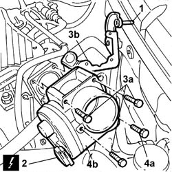

1056B15 throttle body intergral with mds - r r
- Path
- Procedures > 10 ENGINE > 1056 PETROL INJECTION SYSTEM > 1056B MULTI-POINT INJECTION SYSTEM (MPI) > 1056B15 throttle body intergral with mds - r r
- Kind
- repair procedure (removal / refitting; the operation number is the code)
- Applies to
- engines: 1.6 16v; all production periods
- Interactive page
- https://sloeber94.github.io/elrnDB-fDbl/en/#/2584357
Applies to: engines: 1.6 16v; all production periods
 Removing
Removing
 Refitting
RefittingOp. 1048A32 HOSE FROM AIR FILTER TO INTAKE MANIFOLD - R.R.
1. Undo the retaining clip and release the system pipe
2. Disconnect the electrical connection.
Name | Connector | |
|---|---|---|
2 | Integrated throttle body actuator |
3. Remove the three bolts (3a) and move bracket (3b) aside.
4. Undo the retaining bolt (4a) and remove throttle body (4b).

Applies to: engines: 1.6 16v; all production periods
Refitting
RemovingReplace the throttle body with bracket back in its housing and fix it tightening the bolts to the recommended torque.
Restore the electrical connection and secure the cooling system pipe using the retaining clip.
 | Name | Connector |
|---|---|---|
- | Integrated throttle body actuator |
Op. 1048A32 HOSE FROM AIR FILTER TO INTAKE MANIFOLD - R.R.
If the throttle body integrated with MDS is replaced, re-initialise the injection-ignition control unit
Op. 1056B81 RUN ELECTRONIC IGNITION/INJECTION CONTROL UNIT (SINGLE) SELF-LEARNING PROCEDURE